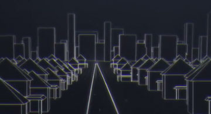
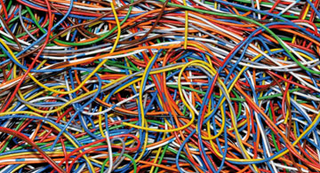
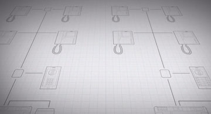

Se acabaron los enredos, la incompatibilidad de conexiones y las instalaciones imposibles. Con DUOX llega lo fácil, lo nuevo, lo revolucionario.
Full digital
Full digital
DUOX es primer Smart System completamente digital en tecnología dos hilos no polarizados. Es el sistema más avanzado del mundo.

Todos los estilos
Todos los estilos
Es posible atender grandes y pequeños proyectos, viviendas unifamiliares, condominios, estructuras verticales o diseños en horizontal.

Todos los cables
Todos los cables
Paralelo, par trenzado, UTP... en obra nueva. En el caso de reposición DUOX funciona con el cableado existente en antiguas instalaciones; 5 hilos, timbre de dos hilos o antiguo cable 4+N.

Instalación simplificada
Instalación simplificada
Cableado básico de dos hilos no polarizados. Ausencia de elementos intermedios, sin distribuidores, sin derivadores, sin cambiadores. Programación guiada por voz.
Máximas capacidades
Máximas capacidades
La digitalización completa del sistema conlleva la posibilidad de ofrecer a instaladores e integradores las máximas capacidades así como una calidad óptima de audio y video.
Flexibilidad
Flexibilidad
El usuario decide: teléfono o Monitor. Cada propietario decide qué equipo desea poner en su vivienda. Y puede añadir dos terminales extra en cualquier momento.
Vistas al futuro
Vistas al futuro
Con DUOX estamos desplegando en las viviendas una plataforma digital que, además de ofrecernos importantes mejoras para hoy servirá de base para innovaciones del mañana.